Extended Shader Nodes¶
1. General Eevee Utility Nodes¶
Render Info¶
Entry¶
Add > Input > Render Info

Outputs¶
Frag CoordWidthHeight
Purpose¶
Provides the coordinate and pixel size of the current Eevee render window.
Notes¶
Frag Coord.xyis normalized screen UV in0-1Frag Coord.zis the current fragment depthWidth/Heightare the current render-region pixel dimensions
Scene Time¶
Entry¶
Add > Input > Scene Time
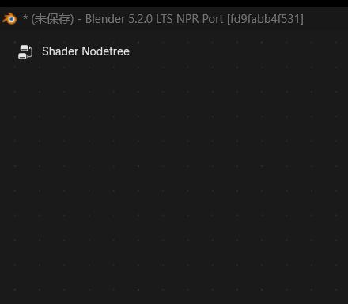
Input¶
Scale
Outputs¶
FrameSecondsTimelineScaled Frame
Purpose¶
Provides time-related values from the current scene.
Screen Derivative¶
Entry¶
Add > Utilities > Math > Screen Derivative
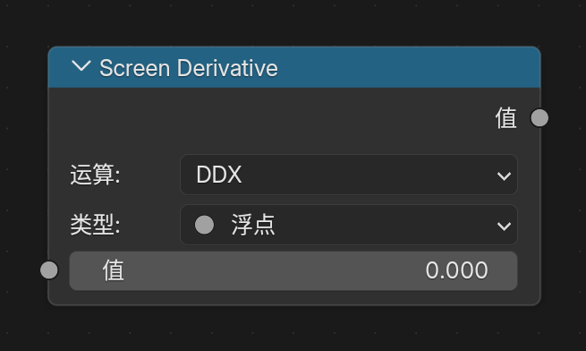
Feature¶
Gets the difference between neighboring pixels in screen space:
DDXDDYDDXY
where DDXY means DDX + DDY.
Portal In / Portal Out¶
Entry¶
Add > Layout > Portal InAdd > Layout > Portal Out
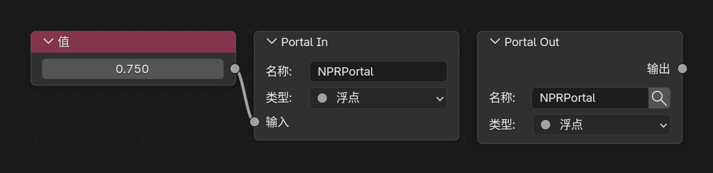
Feature Description¶
These are “portal” nodes used to organize node links.
Notes¶
Portal In: stores a named, typed value in the current node treePortal Out: retrieves that value later by name inside the same node tree- Creating a new
Portal Ingenerates a unique name automatically Portal Outincludes a magnifier button that jumps to the matchingPortal In- Portals are only recognized inside the same shader node tree and do not automatically pass through node groups
2. Eevee Object Material Nodes¶
Outline Control¶
Entry¶
Add > Output > Outline Control
Available in Eevee object materials and NPR Tree.
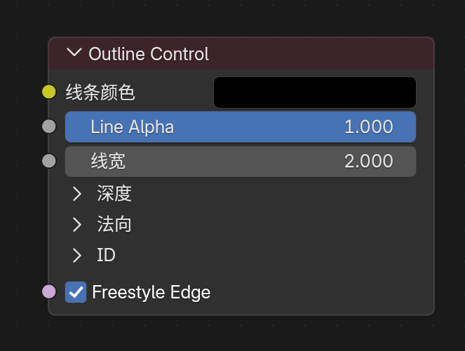
Inputs¶
Line ColorLine AlphaLine WidthDepth ThresholdDepth Threshold RangeDepth Edge WidthNormal ThresholdNormal Threshold RangeNormal Edge WidthOutline IDID EdgeID Edge WidthFreestyle Edge
Purpose¶
Writes outline parameters for Eevee's built-in screen-space outline pass.
Basic Workflow¶
- Add
Outline Controlto a material that should contribute outlines. - Use
Line Color,Line Alpha, andLine Widthto control the visible stroke. - Use the
DepthandNormalpanels to tune thresholds, transition ranges, and edge-width multipliers. - Use the
IDpanel to control ID boundaries and their width, and enableFreestyle Edgewhen needed. - Keep
Render Properties > Outlineenabled globally. - Enable
View Layer Properties > Passes > Data > Outlinewhen the outline result should be available as a separate pass.
Notes¶
- This is an auxiliary output node; it does not replace
Material Output Line Alphais multiplied withLine Color.a, and together they determine final opacity- If
Line Width <= 0or the final alpha resolves to0, nothing is written Outline ID = 0uses automatic grouping from the object resource IDOutline ID > 0can be used to force multiple objects or surfaces into the same outline groupDepth Thresholdis more related to depth discontinuity edges, whileNormal Thresholdis more related to internal edges from normal variationThreshold Range = 0produces a hard threshold; increasing the range lets edge width ramp in smoothly above itDepth / Normal / ID Edge Widthindependently scale the width of each edge classID Edgecontrols boundaries between Outline IDs, whileFreestyle Edgecontrols marked mesh edges- Objects in Holdout collections no longer write
Outline Controlparameters and no longer contribute Freestyle / marked-edge outline seeds
Render Texture¶
Entry¶
Add > Texture > Render Texture
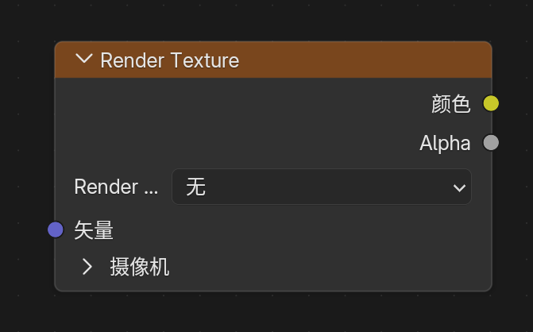
Purpose¶
Reads a Render Textures entry configured in the scene.
Inputs / Outputs¶
- Input:
Vector - Outputs:
Color,Alpha
Screenspace Info¶
Entry¶
Add > Input > Screenspace Info
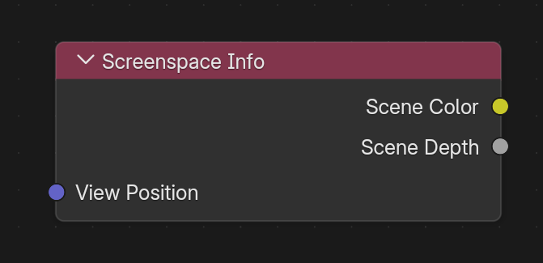
Inputs / Outputs¶
- Input:
View Position - Outputs:
Scene Color,Scene Depth
Purpose¶
Reads color or depth from the current render buffer.
Usage Notes¶
Raytracingmust be enabled in render settings- Material
Render Methodmust be set toDithered Raytraced Transmissionmust be enabled- The default
View Positioninput transforms the current position into camera space and then flips theZaxis
World Environment¶
Entry¶
Add > Input > World Environment

Inputs / Outputs¶
- Input:
Direction - Output:
Color
Purpose¶
Directly samples the Eevee world environment color without depending on whether geometry exists behind the screen.
Notes¶
- If
Directionis not connected, the current surface view direction is used - If
Directionis connected, the world environment is sampled in that direction - The result is closer to Eevee environment / probe lighting than to a screen-space buffer
Light Probe Color¶
Entry¶
Add > Input > Light Probe Color

Inputs / Outputs¶
- Inputs:
Direction,Roughness - Outputs:
Reflection,Irradiance,Combined
Purpose¶
Reads the currently available Eevee lighting-probe result directly, splitting it into reflection, irradiance, and combined outputs.
Notes¶
Reflectionsamples reflection-probe or world-environment lightingIrradiancereads diffuse probe or ambient spherical-harmonic lightingCombinedisReflection + IrradianceRoughnesscontrols reflection-probe blur from mirror-like at0to fully rough at1
World To Tangent¶
Entry¶
Add > Utilities > Vector > World To Tangent
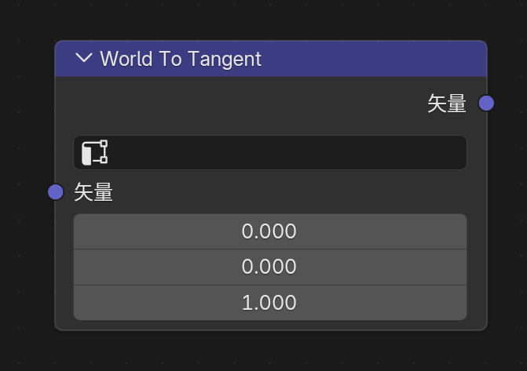
Inputs / Outputs¶
- Input:
Vector - Output:
Vector
Purpose¶
Converts a world-space direction vector into the tangent space of the current surface.
Notes¶
- A
UV Mapcan be chosen in the node panel, and the tangent of that UV is used as the basis - This is useful for anisotropic direction control, tangent-space flow, and local scan-direction effects
GLSL Function¶
Entry¶
Add > Script > GLSL Function
Available in Eevee object materials, Filter materials, and NPR Tree. It is not currently exposed in the World domain.

Purpose¶
Injects a user-authored GLSL function into an Eevee object, Filter, or NPR material compile path. This is useful for custom math nodes, procedural textures, SDF logic, screen-space effects, and porting parts of external GLSL / HLSL code.
Basic Workflow¶
- Add a
GLSL Functionnode. - Select an internal
Textdata-block or point the node to an external.glslfile. - Explicitly select the exported function name in
Function. - Use the
Node / Codesegmented control at the top of the node to switch between regular controls and inline source editing. - After changing the source or function selection, use the refresh button to parse, validate, and update the node interface.
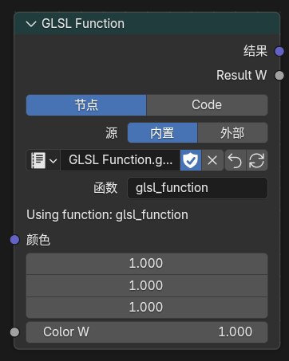
Source, function, and parameter controls in Node mode
Node / Code Editing¶
Nodemode is used to choose the source and function and to adjust sockets.Codemode edits an internal Text source and target function name directly inside the node.- Typing in
Codemode updates a node draft only. It does not immediately overwrite the Text, replace live sockets, or change the running material. - When the draft is dirty, the refresh button performs an atomic Apply. The candidate must pass parsing and GPU compilation before it is written to the Text and its interfaces are refreshed; a failure keeps the previous Text, sockets, and material result intact.
- The revert button performs Discard, removing unapplied source and function-name changes.
- If several
GLSL Functionnodes share one Text, Apply validates every user before refreshing them together. It is rejected without changing the live state when another user has a draft, the Text changed externally, or a linked user cannot be edited. - External
.glslsources are read-only inCodemode. UseMake Internalto copy the current external source into an internal Text before editing. - Unapplied drafts are stored in the
.blendfile and restored when it is reopened.
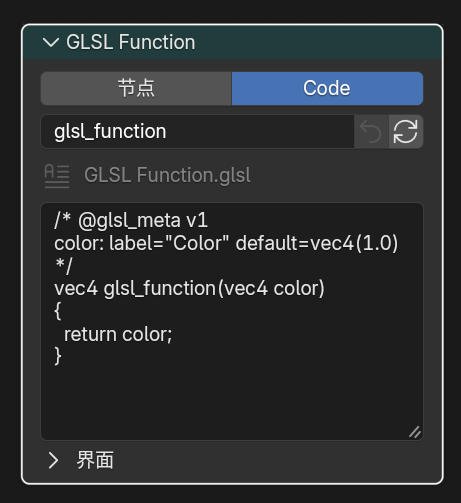
External sources are read-only in Code mode and can be copied with Make Internal
Example Project¶
- GLSL Function example
.blendproject: Google Drive - This file is intended as a ready-made reference scene for the current
GLSL Functionworkflow and node setup.
Supported Boundary Types¶
- Input parameters:
float,int,bool,vec2,vec3,vec4,mat2,mat3,mat4,sampler2D - Output parameters:
out float,out int,out bool,out vec2,out vec3,out vec4,out mat2,out mat3,out mat4 - Return values:
void,float,int,bool,vec2,vec3,vec4,mat2,mat3,mat4
Important Notes¶
Functionis not auto-selected and must be chosen explicitlysampler2Dappears as aClosureinputsampler2Dcan be connected toImage to Closureor a compatibleClosure OutputClosure Output -> sampler2Dcurrently guarantees only the directtexture(tex, uv)path- If the function depends on
textureLod,textureGrad,textureSize, ortexelFetch, prefer driving it withImage to Closure @glsl_metasupportsdefault,min,max,hide_value,subtype,label,description, and one-level panel groups- Supported
subtypevalues forfloat:none,unsigned,percentage,factor,mass,angle,time,time_absolute,distance,wavelength - Supported
subtypevalues forvec2 / vec3 / vec4:none,factor,percentage,translation,direction,velocity,acceleration,euler,xyz subtype=coloris additionally supported forvec3andvec4@glsl_meta default=also accepts expressions such asglsl_position(),normalize(glsl_normal()), orglsl_ambient_lighting()- When
@glsl_meta default=uses an expression, an unconnected socket evaluates that expression, while a connected socket uses the link value and hides the static value field automatically - Expression defaults are recommended only for
float / vec2 / vec3 / vec4inputs and should not directly reference other exported parameters label="..."sets the socket display name in the node UI, supports quoted single-line text with spaces, and does not change the GLSL parameter name or socket identifierdescription="..."adds a tooltip description to an input socket and supports quoted single-line text with spaces@panel "Name" closed=true|falsegroups following inputs into one-level collapsible panels and must be closed with@end_panel- Panels support one level only; empty
param:rows can be used inside a panel for grouping without changing defaults sampler2Dcan uselabel,description, and panel grouping, but does not supportdefault / min / max / hide_value / subtype- Only
vec3 / vec4inputs explicitly marked withsubtype=colorbecome color sockets vec3 + subtype=colorenters GLSL asrgbwithalpha = 1.0vec4 + subtype=colorkeeps fullrgba- Refreshing or recompiling the node preserves the
wcomponent ofvec4inputs instead of degrading them tovec3 / rgb mat2 / mat3 / mat4boundaries are split into matrix-column sockets in the node and reassembled in the generated GLSL wrapper- For matrix inputs, limit Meta to
label,description, andpanel; do not usedefault / min / max / subtypeon matrices - Exported boundary types do not currently support
structorarray int / boolboundaries are useful for mode switches, enums, andlightgroup_idstyle parameters- Built-in geometry helpers are available in the function body:
glsl_position(),glsl_normal(),glsl_true_normal(),glsl_incoming() - Built-in draw-view transform matrix helpers (vertex + fragment stages):
- View / projection:
glsl_view_matrix(),glsl_view_matrix_inverse(),glsl_projection_matrix(),glsl_projection_matrix_inverse(),glsl_view_projection_matrix(),glsl_view_projection_matrix_inverse() - Object model (Surface / NPR; identity stubs under
Filter):glsl_model_matrix(),glsl_model_matrix_inverse(),glsl_model_view_matrix(),glsl_model_view_projection_matrix(),glsl_normal_matrix() - View / projection matrices come from the current draw
ViewMatricesand include overscan, Film crop, and TAA jitter; view / projection helpers remain available underFilter - Built-in ambient-light helper:
glsl_ambient_lighting() - Built-in direct-light helpers:
GLSLLight,glsl_light_count(),glsl_light_get(light_index),glsl_light_shadow(light_index, shading_normal) GLSLLight.lightgroup_idmaps directly to the light-data panelLightgroup IDGLSLLight.attenuationis only the base attenuation term for custom per-light models; it does not includeNdotL, toon ramps, Blinn-Phong, GGX, shadows, or material-side Fresnel / metallic / roughness- When a light node tree uses
Light Shader Output,glsl_light_get(i).diffuse_color,glsl_light_get(i).specular_color, andglsl_light_get(i).attenuationread the evaluated Light Shader color and attenuation Light Shader Outputonly affects those three color / attenuation fields;type,index,lightgroup_id,vector,position,direction, anddistancestill come from raw Eevee light data- Without a Light Shader output,
GLSLLightkeeps ordinary Eevee light-access behavior - These direct-light helpers target Eevee object materials and
NPR TreeSurface/Fragment paths;Filter,World, volume, probe / indirect lighting are not stable public helper semantics - Recommended form:
light.diffuse_color * light.attenuation * max(dot(N, light.vector), 0.0) * glsl_light_shadow(...) - Recommended form:
light.specular_color * light.attenuation * custom_spec_term * glsl_light_shadow(...)
Example: Parameter Meta with Descriptions and Panels¶
label="..." is shown as the socket name. description="..." is shown as the input socket tooltip. @panel groups many inputs into one-level collapsible panels on the node.
/* @glsl_meta v1
base_color: label="Base Color" default=vec3(1.0) subtype=color description="Base surface color"
@panel Specular closed=true
specular: label="Specular Strength" default=0.5 min=0.0 max=1.0 subtype=factor description="Specular strength"
roughness: label="Roughness" default=0.45 min=0.0 max=1.0 subtype=factor description="Highlight roughness"
@end_panel
@panel Texture closed=true
tex: label="Texture" description="Texture closure used by texture(tex, uv)"
uv: label="Coordinates" default=vec2(0.0) description="Texture coordinates"
@end_panel
*/
vec4 annotated_shader(vec3 base_color, float specular, float roughness, sampler2D tex, vec2 uv)
{
vec3 tex_color = texture(tex, uv).rgb;
vec3 color = mix(base_color, tex_color, specular * (1.0 - roughness));
return vec4(color, 1.0);
}
labelanddescriptionaffect UI only and do not change socket identifiers, default synchronization, or GLSL callsoutparameters supportlabelonly; other meta properties are still input-onlysampler2Dcan uselabel,description, and panel grouping, but does not supportdefault / min / max / hide_value / subtype- Panels support one level only, cannot be nested, and must be closed explicitly with
@end_panel
Example: mode Debug Mapping¶
If you want one GLSL Function node to switch between helper outputs with a single mode parameter, this mapping is the current reference:
mode |
Helper / Field |
|---|---|
0 |
glsl_position() |
1 |
glsl_normal() |
2 |
glsl_true_normal() |
3 |
glsl_incoming() |
4 |
glsl_ambient_lighting() |
5 |
glsl_light_count() |
6 |
light.valid |
7 |
light.type |
8 |
light.lightgroup_id |
9 |
light.vector |
10 |
light.position |
11 |
light.direction |
12 |
light.distance |
13 |
light.diffuse_color |
14 |
light.specular_color |
15 |
light.attenuation |
16 |
glsl_light_shadow(i, N) |
Example: Filter by lightgroup_id¶
You can filter Eevee direct lights inside GLSL Function by reading GLSLLight.lightgroup_id.
Function name suggestion: lightgroup_lambert. This version also demonstrates subtype=color, int / bool defaults, description, min / max, subtype=factor, and @panel:
/* @glsl_meta v1
albedo: default=vec3(1.0) subtype=color description="Diffuse albedo for the selected light group"
target_lightgroup_id: default=0 description="Only lights with this Lightgroup ID are included"
@panel Shading closed=false
use_shadow: default=true description="Apply glsl_light_shadow to selected lights"
shadow_strength: default=1.0 min=0.0 max=1.0 subtype=factor description="Blend from unshadowed to fully shadowed direct light"
ambient_floor: default=0.0 min=0.0 max=1.0 subtype=factor description="Small constant fill after lightgroup filtering"
@end_panel
*/
vec4 lightgroup_lambert(vec3 albedo,
int target_lightgroup_id,
bool use_shadow,
float shadow_strength,
float ambient_floor)
{
vec3 N = normalize(glsl_normal());
vec3 result = vec3(0.0);
float shadow_mix = clamp(shadow_strength, 0.0, 1.0);
for (int i = 0; i < glsl_light_count(); i++) {
GLSLLight light = glsl_light_get(i);
if (!light.valid) {
continue;
}
if (light.lightgroup_id != target_lightgroup_id) {
continue;
}
float NdotL = max(dot(N, light.vector), 0.0);
if (NdotL <= 0.0) {
continue;
}
float shadow = use_shadow ? glsl_light_shadow(i, N) : 1.0;
shadow = mix(1.0, shadow, shadow_mix);
result += albedo *
light.diffuse_color *
light.attenuation *
NdotL *
shadow;
}
result += albedo * clamp(ambient_floor, 0.0, 1.0);
return vec4(result, 1.0);
}
Notes:
target_lightgroup_idmaps directly to the light data panel'sLightgroup ID- To exclude one light group instead, change the test to
if (light.lightgroup_id == target_lightgroup_id) continue; use_shadow,shadow_strength, andambient_floorshow common boolean input, factor range, and panel grouping patterns- This filtering only affects the per-light model you write in this function; it does not change Eevee's regular material lighting path
Example: PBR-Style Direct Light + Ambient Light¶
This example shows how the current GLSL Function workflow can combine:
- Geometry helpers:
glsl_normal(),glsl_true_normal(),glsl_incoming() - Ambient-light helper:
glsl_ambient_lighting() - Per-light helpers:
glsl_light_count(),glsl_light_get(i),glsl_light_shadow(i, N)
Function name suggestion: pbr_lit. This version groups common surface parameters in the Surface panel and exposes built-in helpers as expression defaults that can still be overridden by connected sockets:
/* @glsl_meta v1
base_color: default=vec3(0.8, 0.72, 0.6) subtype=color description="Base surface albedo"
@panel Surface closed=false
roughness: default=0.45 min=0.04 max=1.0 subtype=factor description="Microfacet roughness"
metallic: default=0.0 min=0.0 max=1.0 subtype=factor description="Metallic blend amount"
ao: default=1.0 min=0.0 max=1.0 subtype=factor description="Ambient occlusion multiplier"
@end_panel
@panel Builtin Helpers closed=true
normal_ws: default=normalize(glsl_normal()) hide_value=true description="Optional world-space shading normal override"
view_ws: default=normalize(glsl_incoming()) hide_value=true description="Optional world-space view direction override"
ambient_light: default=glsl_ambient_lighting() subtype=color hide_value=true description="Optional ambient lighting override"
@end_panel
*/
float saturate1(float x)
{
return clamp(x, 0.0, 1.0);
}
float pow5(float x)
{
float x2 = x * x;
return x2 * x2 * x;
}
vec3 fresnel_schlick(float cos_theta, vec3 F0)
{
return F0 + (vec3(1.0) - F0) * pow5(1.0 - saturate1(cos_theta));
}
float distribution_ggx(float NdotH, float roughness)
{
float a = roughness * roughness;
float a2 = a * a;
float nh2 = NdotH * NdotH;
float denom = nh2 * (a2 - 1.0) + 1.0;
return a2 / max(3.14159265 * denom * denom, 1e-6);
}
float geometry_schlick_ggx(float NdotV, float roughness)
{
float r = roughness + 1.0;
float k = (r * r) / 8.0;
return NdotV / max(NdotV * (1.0 - k) + k, 1e-6);
}
float geometry_smith(float NdotV, float NdotL, float roughness)
{
return geometry_schlick_ggx(NdotV, roughness) *
geometry_schlick_ggx(NdotL, roughness);
}
vec4 pbr_lit(vec3 base_color,
float roughness,
float metallic,
float ao,
vec3 normal_ws,
vec3 view_ws,
vec3 ambient_light)
{
vec3 N = normalize(normal_ws);
vec3 Ng = normalize(glsl_true_normal());
vec3 V = normalize(view_ws);
if (dot(N, Ng) < 0.0) {
N = Ng;
}
roughness = clamp(roughness, 0.04, 1.0);
metallic = clamp(metallic, 0.0, 1.0);
ao = clamp(ao, 0.0, 1.0);
vec3 F0 = mix(vec3(0.04), base_color, metallic);
vec3 direct_diffuse = vec3(0.0);
vec3 direct_specular = vec3(0.0);
for (int i = 0; i < glsl_light_count(); i++) {
GLSLLight light = glsl_light_get(i);
vec3 L = normalize(light.vector);
vec3 H = normalize(V + L);
float NdotL = saturate1(dot(N, L));
float NdotV = saturate1(dot(N, V));
float NdotH = saturate1(dot(N, H));
float VdotH = saturate1(dot(V, H));
if (NdotL <= 1e-5 || NdotV <= 1e-5) {
continue;
}
float shadow = glsl_light_shadow(i, N);
vec3 F = fresnel_schlick(VdotH, F0);
float D = distribution_ggx(NdotH, roughness);
float G = geometry_smith(NdotV, NdotL, roughness);
vec3 specular_brdf = (D * G * F) / max(4.0 * NdotV * NdotL, 1e-5);
vec3 kd = (vec3(1.0) - F) * (1.0 - metallic);
vec3 diffuse_brdf = kd * base_color / 3.14159265;
direct_diffuse += diffuse_brdf *
light.diffuse_color *
light.attenuation *
NdotL *
shadow;
direct_specular += specular_brdf *
light.specular_color *
light.attenuation *
NdotL *
shadow;
}
vec3 ambient = ambient_light * base_color * (1.0 - metallic) * ao;
vec3 color = ambient + direct_diffuse + direct_specular;
return vec4(max(color, vec3(0.0)), 1.0);
}
Notes:
normal_ws,view_ws, andambient_lightuse expression defaults; unconnected sockets call the built-in helpers, while connected sockets use the external overridehide_value=trueis useful for helper override inputs so the node does not show a misleading static default value
GLSL Script Expression¶
Entry¶
Add > Script > GLSL Script Expression
Available in both Eevee object materials and NPR Tree.
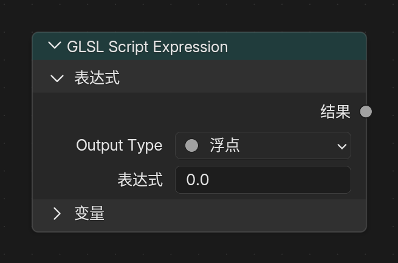
Purpose¶
Evaluates one single-line GLSL expression and publishes it as a Result output. This is useful for simple math, color mixing, vector recomposition, and debugging formulas without creating a separate Text data-block or external .glsl file.
Node Settings¶
Output TypeFloatVectorColorExpression: the single GLSL expression assigned toResultVariables: a manually maintained list of input variables; each variable becomes a node input socket- Each variable can be
Float,Vector, orColor
Basic Workflow¶
- Add a
GLSL Script Expressionnode. - Set
Output Type. - Add variables in the
Variablespanel, then set each variable name and type. - Reference those variable names directly from
Expression. - Connect
Resultto the downstream node chain.
Example¶
mix(base_color, tint_color, clamp(mask, 0.0, 1.0))
Matching variables:
base_color:Colortint_color:Colormask:FloatOutput Type:Color
Limits¶
- Only one expression is allowed;
;,{}, preprocessor directives, and multi-statement blocks are rejected - Assignment, increment / decrement, control flow, declarations, and comments are rejected
- The expression is numeric GLSL only; strings, samplers, texture sampling functions, and image load/store are not supported
GLSL Functionhelpers such asglsl_position(),glsl_normal(), andglsl_light_get()cannot be called directly- Variable names are normalized to valid GLSL identifiers; reserved words,
gl_prefixes, and internal helper names are avoided automatically - Use
GLSL Functioninstead when a node needs functions, textures, direct-light helpers,sampler2D, or complex control flow
Image to Closure¶
Entry¶
Add > Texture > Image to Closure
Available in both Eevee object materials and NPR Tree.

Output¶
Closure
Purpose¶
Wraps a regular image as a closure-backed source for sampler2D, mainly for feeding GLSL Function(sampler2D) inputs while keeping the same wiring style as procedural Closure Output sources.
Node Settings¶
ImageInterpolationExtension
Usage Notes¶
- This node does not expose a normal image socket; the image is selected directly in the node panel
- It is an adapter for
sampler2Dworkflows, not a replacement forImage Texture - Prefer it when a function needs image-resource specific sampling behavior
Basis Transform¶
Entry¶
Add > Utilities > Vector > Basis Transform
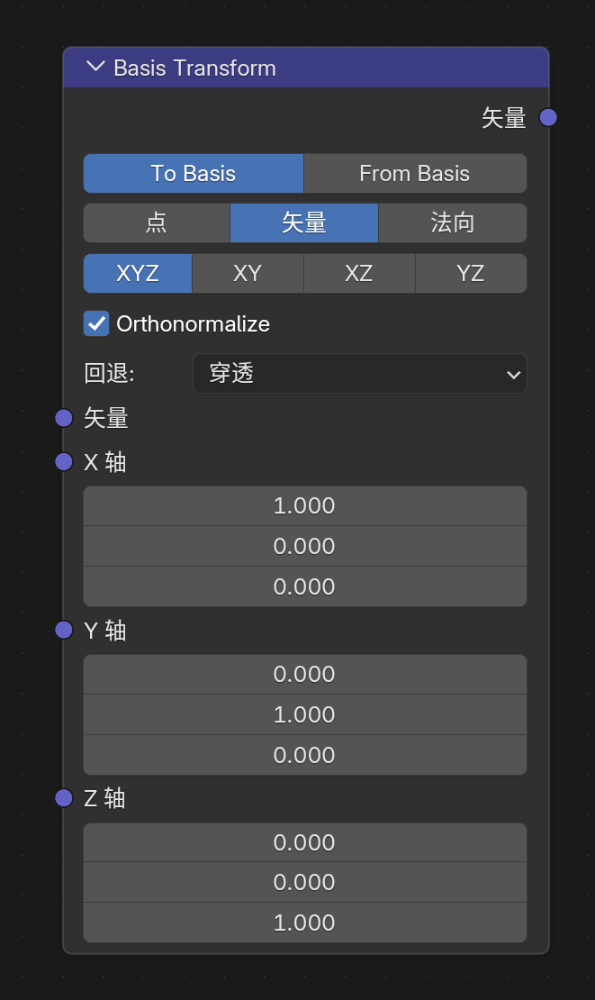
Purpose¶
Transforms points, vectors, or normals to or from a custom basis defined by Origin + axis inputs.
Inputs / Outputs¶
- Inputs:
Vector,Origin,X Axis,Y Axis,Z Axis - Output:
Vector
Panel Options¶
DirectionTo BasisFrom BasisVector TypePointVectorNormalBasis InputXYXZYZXYZOrthonormalizeFallback
Notes¶
Pointmode usesOriginas the translation reference, whileVectorandNormalonly transform directionBasis Inputcan derive the missing axis from two supplied axes, or use explicitXYZOrthonormalizehelps stabilize imperfect or non-orthogonal input axes- Useful for local basis projection, procedural texture orientation, anisotropic direction control, and custom normal-space conversion
Twirl¶
Entry¶
Add > Utilities > Vector > Twirl
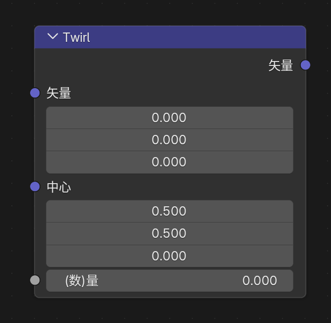
Inputs / Outputs¶
- Inputs:
Vector,Center,Amount - Output:
Vector
Purpose¶
Twists the input coordinate field around a chosen center. This is useful for Goo Engine style swirls, distorted UVs, and radial deformations.
Water Ripples¶
Entry¶
Add > Texture > Water Ripples
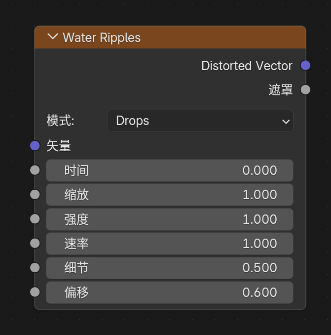
Inputs / Outputs¶
- Inputs:
Vector,Time,Scale,Intensity,Speed,Detail,Bias - Outputs:
Distorted Vector,Mask
Panel Options¶
ModeDropsRipplesFlowCaustic
Purpose¶
Generates procedural ripple distortion and a ripple mask.
Hex Grid Texture¶
Entry¶
Add > Texture > Hex Grid Texture
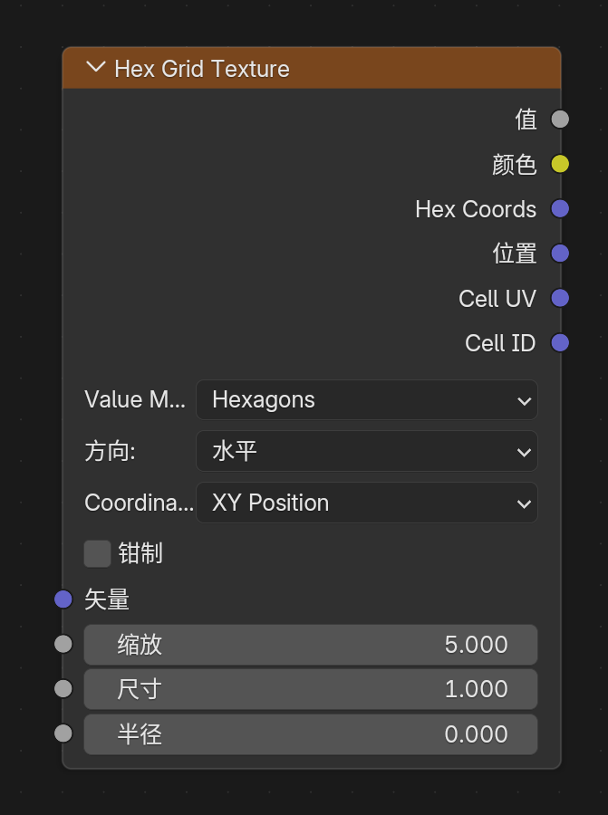
Inputs¶
VectorScaleSizeRadiusRoundness
Outputs¶
ValueColorHex CoordsPositionCell UVCell ID
Panel Options¶
Coordinate ModeXY PositionHex PositionValue ModeHexagonsSDF HexagonsDotsDirectionHorizontalVerticalHorizontal TiledVertical TiledClamp
Purpose¶
Generates a hex-grid texture that can be used for honeycomb patterns, cell partitioning, SDF masks, and hex-coordinate based lookups.
SDF Primitive¶
Entry¶
Add > Texture > SDF Primitive
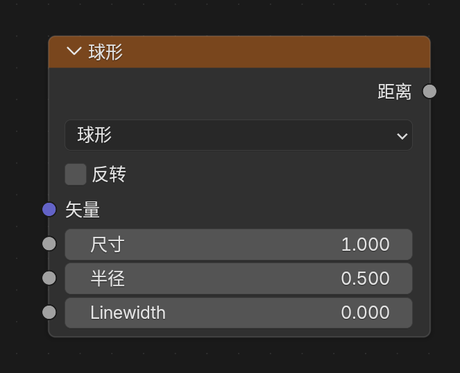
Output¶
Distance
Purpose¶
Generates signed-distance-field base shapes directly inside material nodes.
SDF Operator¶
Entry¶
Add > Converter > SDF Operator

Output¶
Distance
Purpose¶
Combines, trims, and reshapes one or two SDF distance fields.
SDF Vector Operator¶
Entry¶
Add > Utilities > Vector > SDF Vector Operator
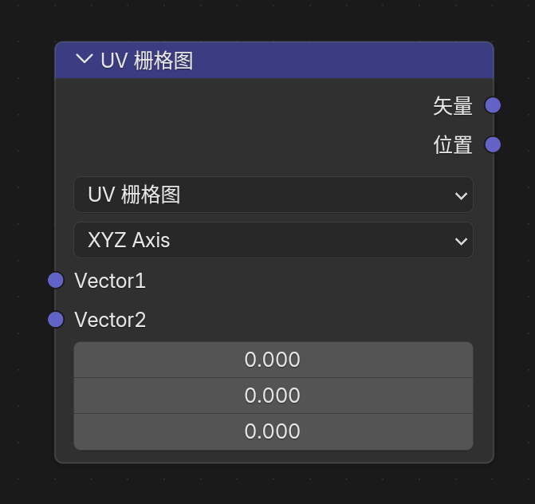
Outputs¶
VectorPositionValue
Purpose¶
Preprocesses coordinate, UV, or vector domains before they are fed into SDF Primitive.
3. Goo Engine / NPR-Oriented Input Nodes¶
Bevel¶
Entry¶
Add > Input > Bevel

Inputs / Outputs¶
- Inputs:
Radius,Normal - Output:
Normal
Purpose¶
Generates an approximate beveled normal in Eevee so hard edges can look smoother.
Curvature¶
Entry¶
Add > Input > Curvature
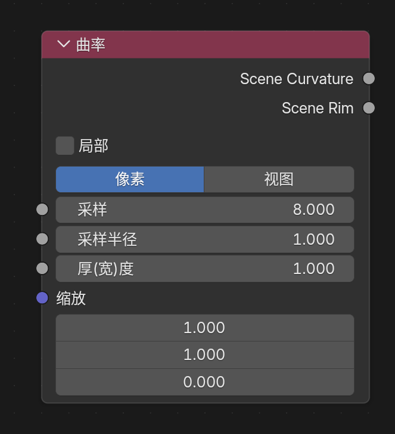
Inputs¶
SamplesSample RadiusThicknessScale
Outputs¶
Scene CurvatureScene Rim
Panel Options¶
LocalSample RadiusPixelView
Notes¶
Localtries to keep the evaluation focused on the current object- In
Pixelmode,Sample Radiusis interpreted in pixels and therefore changes with render resolution - In
Viewmode,Sample Radiusis interpreted relative to the view, which helps keep rim width more consistent between viewport and final render - This is still a screen-space node, so the result depends on camera view, resolution, and sampling radius
Shader Info¶
Entry¶
Add > Input > Shader Info

Inputs¶
World PositionNormalExponent
Outputs¶
Diffuse ShadingShadowAmbient LightingHalf-Lambert FactorBlinn-Phong Factor
Meaning of Each Output¶
Diffuse Shading: the summed Lambert diffuse term from valid lights, clamped to0-1Shadow: switchable shadow evaluation outputAmbient Lighting: probe / environment indirect-light contributionHalf-Lambert Factor: summed half-Lambert diffuse term, clamped to0-1Blinn-Phong Factor: averaged Blinn-Phong highlight factor weighted by each light's specular channel, clamped to0-1
Notes¶
Shadow ModeBuilt-inSoft FilteredSoft Filteredsamples a local neighborhood around the current surface to rebuild smoother gray penumbra from Eevee's dithered black/white shadow resultBlinn-Phong Factordoes not automatically include shadow; multiply it withShadowwhen neededExponentcontrols highlight sharpness and defaults to16- The node panel includes a
Lightgroupcontrol - Only lights with the same
Lightgroup IDparticipate in thisShader Infonode - World-sun style interference is excluded from these direct-light outputs
Light Info¶
Entry¶
Add > Input > Light Info
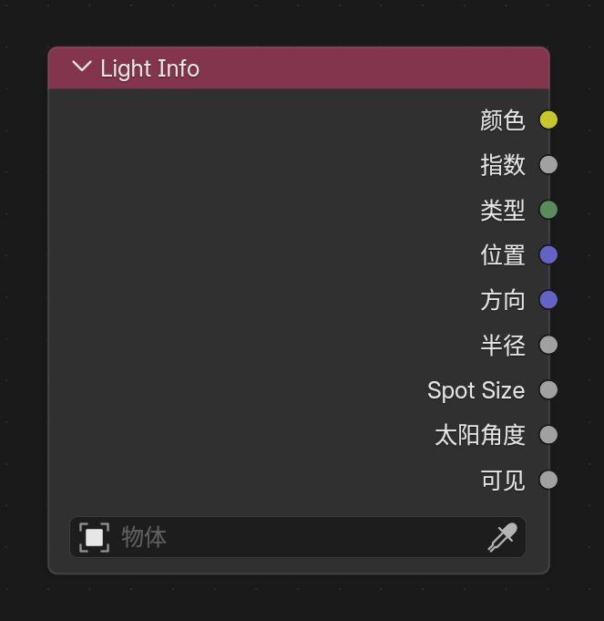
Feature Description¶
Reads information from a selected light.
Fixed Outputs¶
ColorPowerTypeVisible
Visible outputs 1 when the selected light object is not hidden and 0 when it is hidden.
Type is an integer socket with the following values:
-1: no light assigned0: Point1: Sun2: Spot3: Area
Outputs That Appear by Light Type¶
PositionDirectionRadiusSpot SizeSun Angle
Current behavior depends on the selected light type:
Point:Position,RadiusSun:Direction,Sun AngleSpot:Position,Direction,Radius,Spot SizeArea:Position,Direction,Radius
Notes¶
- For per-light processing, use
For Each Lightin theNPR Tree
Light Shader Info / Light Shader Output¶
Entry¶
Use these nodes in an Eevee Light Shader node tree:
Add > Input > Light Shader InfoAdd > Output > Light Shader Output
Feature Description¶
Light Shader Output lets a single Eevee light output custom direct-light color, intensity, and attenuation. It is used only in light node trees, not as a regular object material output.
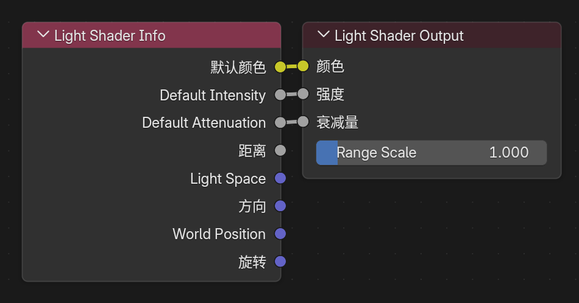
Light Shader Info and Light Shader Output in a light node tree
Light Shader Info Outputs¶
Default ColorDefault IntensityDefault AttenuationDistanceLight SpaceDirectionWorld PositionRotation
These outputs expose the current light's default data at the evaluated sample point and are meant as source inputs for custom light shaders.
Light Shader Output Inputs and Settings¶
Color: output light colorIntensity: non-negative multiplier applied toColorAttenuation: non-negative value written to the Light Shader cache alpha channelRange Scale: scales the Eevee light influence radius used for culling and shadow usage;1keeps the original light range
The written Light Shader result has this meaning:
vec4(Color.rgb * max(Intensity, 0.0), max(Attenuation, 0.0))
Behavior¶
- Lights without a custom Light Shader output keep normal Eevee lighting behavior
- The Light Shader result participates in the connected Eevee direct-light paths, including surface, deferred / NPR, forward, volume, and probe capture paths
- In Surface material paths,
GLSL Functionglsl_light_get(i)reads the evaluated Light Shader color and attenuation GLSL Functionapplies the Light Shader result only todiffuse_color,specular_color, andattenuation; light type, position, direction, distance, andlightgroup_idremain raw light data- Volume, probe bake, and surfel paths can use Light Shader Output for Eevee lighting, but they do not extend the public
GLSL Functionlight-helper semantics

Example effect of Light Shader Output on light color and attenuation
4. Filter-Domain Nodes¶
Filter Object Info¶
Entry¶
Add > Input > Filter Object Info
Available only in the Filter domain.
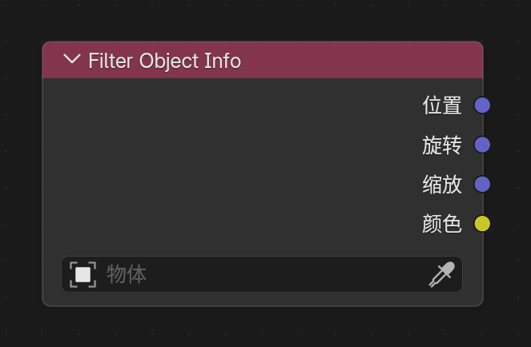
Purpose¶
Reads the world-space transform and viewport display color of a chosen object, making it easier to drive a Filter Graph Filter Pass from scene helpers or controller objects.
Node Setting¶
Object
Outputs¶
LocationRotationScaleColor
Notes¶
Location: world-space location of the chosen objectRotation: world-space Euler rotation in radiansScale: world-space scale of the chosen objectColor: viewport display color of the chosen object- If no object is assigned, the node falls back to
0for location / rotation / color and1for scale
Filter Mask¶
Entry¶
Add > Input > Filter Mask
Available only in the Filter domain.

Purpose¶
Uses Eevee Cryptomatte object information to build fast object masks for filter materials.
Output¶
Mask
Panel Options¶
ModeSingle ObjectObject ListCollection
Notes¶
Single Objectis useful for one controller objectObject Listis useful when a manual object set is needed, and can be filled from the current selectionCollectionis useful when the mask should follow a collection hierarchy- The output is a
0-1float mask that can be used withMix, thresholds, AOV writing, or any other filter logic - Only renderable geometry objects are supported
Scene Color¶
Entry¶
Add > Input > Scene Color
Available only in the Filter domain.
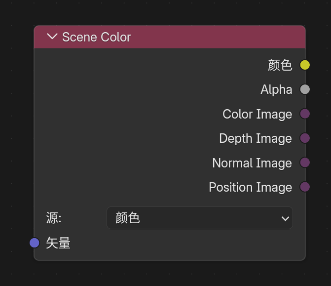
Purpose¶
Reads the current Eevee scene buffer. The Source can be switched in the node panel:
ColorDepthNormalPosition
Inputs / Outputs¶
- Input:
Vector - Outputs:
Color,Alpha
Notes¶
Color: read the resolved scene colorDepth: read linear scene depthNormal: read scene normalsPosition: read the world-space position pass- If
Vectoris not connected, the node samples with theWindowoutput of theTexture Coordinatenode - When
Vectoris connected,Color / Depth / Normal / Positionuse the same screen-UV offset sampling semantics;Positionreconstructs the world position for the offset pixel from its depth and screen coordinate
5. Built-In Node Enhancements¶
OKLab Color Ramp¶
Entry¶
Add > Color > OKLab Color Ramp
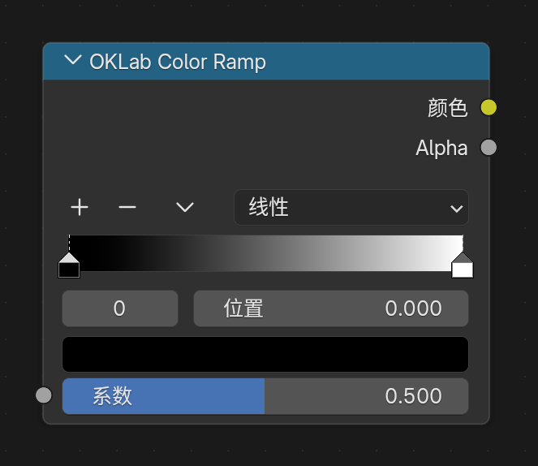
Purpose¶
The standalone OKLab Color Ramp node always evaluates the ramp in the OKLab color space, giving more stable and perceptually smoother color transitions.
Notes¶
- Regular
Color Rampkeeps the existing RGB / HSV / HSL workflow OKLab Color Rampuses the same input, output, and stop-editing workflow as regularColor Ramp- Older files saved as
Color Ramp + OKLabmode are migrated back to the standaloneOKLab Color Rampnode when opened - The node is available in Shader, Geometry, Compositor, and Eevee Light Shader supported node trees